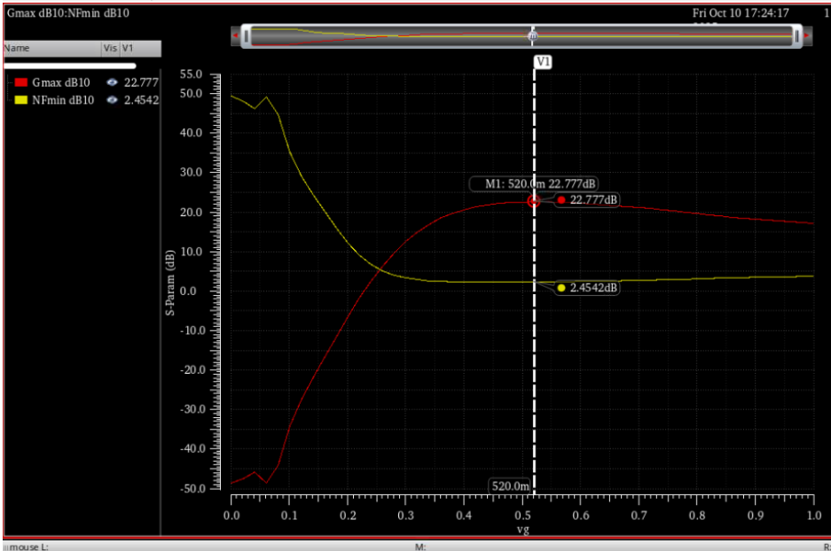
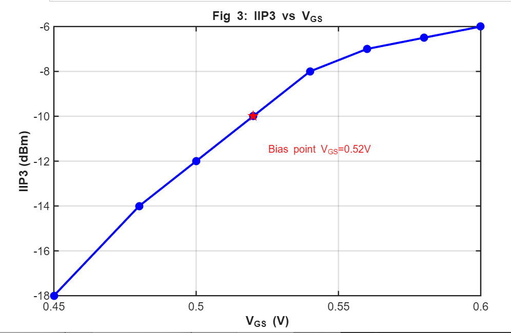
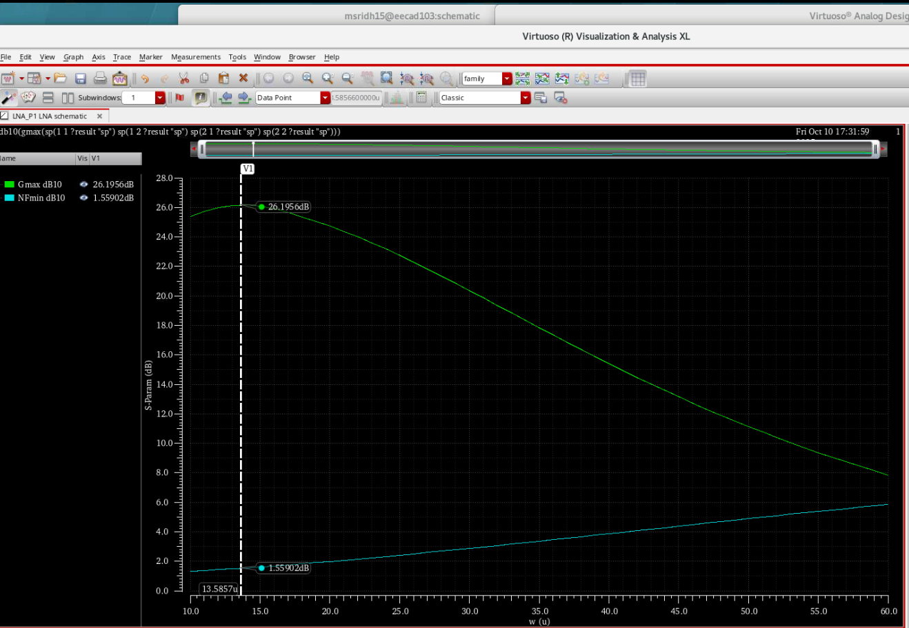
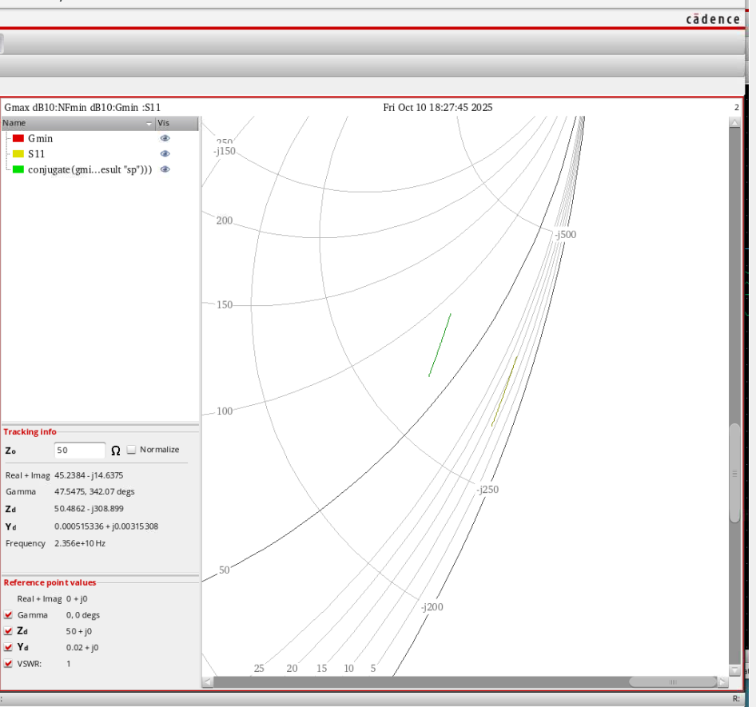
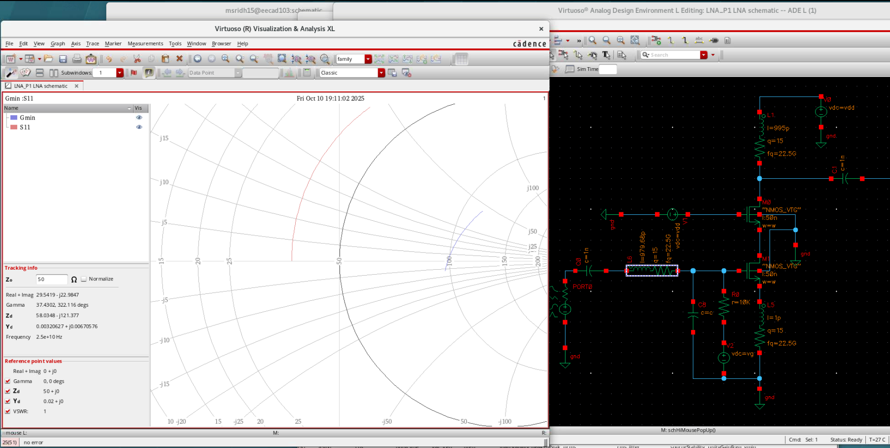
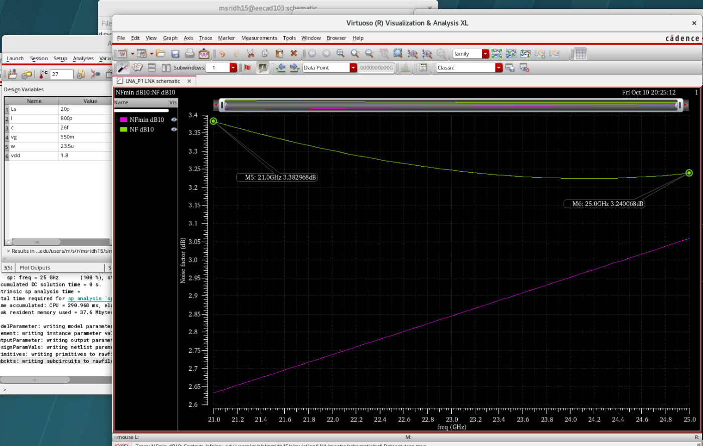
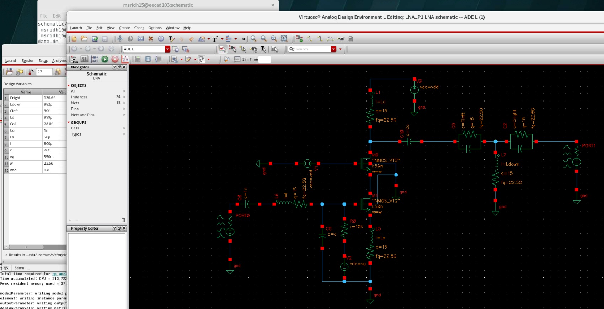

1. LNA Architecture
Tools: Cadence Virtuoso, SpectreRF, Smith Chart Utility
Design Focus: RF front-end LNA with gain, NF, stability, and matching optimization
Frequency Range: 21–24 GHz (center freq ≈ 22–22.5 GHz)
Designed a source-degenerated cascode Low Noise Amplifier (LNA) operating in the 21–24 GHz band with stringent RF performance targets.
The design required full device sizing, bias optimization, noise analysis, matching network creation, stability verification, and linearity extraction.
The project focused on achieving simultaneous noise matching, power matching, high gain, strong linearity,
and low power consumption within practical on-chip inductor constraints (Q = 15, L < 1 nH).

This figure shows the schematic of the source-degenerated cascode LNA topology. Source degeneration is used to improve input matching and noise performance, while the cascode device enhances gain and isolation at mmWave frequencies.
2. Bias Optimization (NFmin & Gmax)
NFmin and maximum available gain were swept versus gate bias voltage. An optimal bias point of Vg ≈ 520 mV was selected, providing the lowest noise figure while maintaining high gain.
3. Linearity Analysis (IIP3)
The IIP3 was evaluated across gate bias voltages. Results indicate a trade-off between low-noise biasing and linearity, with reduced IIP3 at low overdrive voltages.
4. Transistor Sizing
Gain and noise figure were analyzed as a function of transistor width. An optimal width of 13.58 µm was selected, achieving maximum gain with minimum NF.
5. Input Noise & Impedance Matching
The optimum noise impedance and input impedance were plotted on the Smith chart at 22 GHz. Device sizing was adjusted to bring both impedances closer, enabling simultaneous noise and impedance matching.
6. Input Matching Network
Input matching was achieved using a degeneration inductor of approximately 980 pH, resulting in S11 < −10 dB across the 21–24 GHz band.
7. Noise Figure Performance
The simulated noise figure remains below 3.38 dB across the operating frequency range, meeting the design specification.
8. Output Matching

Output matching to 50 Ω was implemented using a T-network, achieving S22 < −10 dB at the center frequency.
9. Final Results & Stability
The final LNA consumes 11.8 mW from a 1.8 V supply and is unconditionally stable across the frequency band, as verified using K-Δ and μ-factor analysis. What is the maximum degradation of NF? The low measured IIP3 of the LNA (≈ −10 dBm), despite meeting the required gain, S-parameter, and noise figure (NF) specifications, can be explained by its design choices. The LNA was optimized using low overdrive voltage and relatively strong source degeneration, which provide excellent input impedance matching and low NF but keep the transistor’s transconductance in a region where nonlinearities significantly impact third-order intermodulation distortion. Slightly increasing the source-degeneration inductance or adjusting device sizing can offer only marginal improvements in linearity, since this feedback mechanism inherently trades linearity for gain and affects both impedance and noise matching. Alternatively, increasing the transistor overdrive (by raising the bias current or device width) enhances linearity by boosting 𝑔𝑚 and reducing the relative contribution of higher-order distortion terms. However, this also shifts the matching point and may degrade NF and/or increase DC power consumption. Hence, the observed performance strong gain, NF, and S-parameter results but poor IIP3 is consistent with a design focused on achieving low noise and high matched gain at the expense of linearity